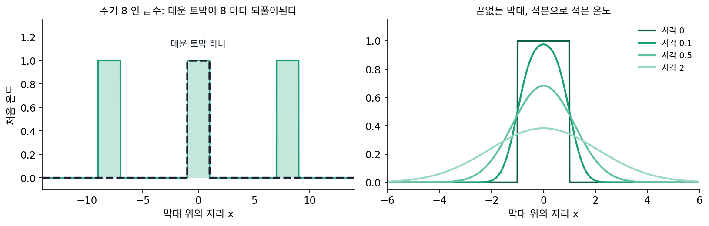
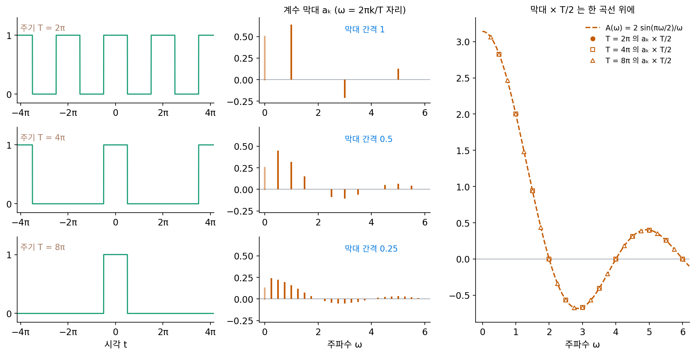
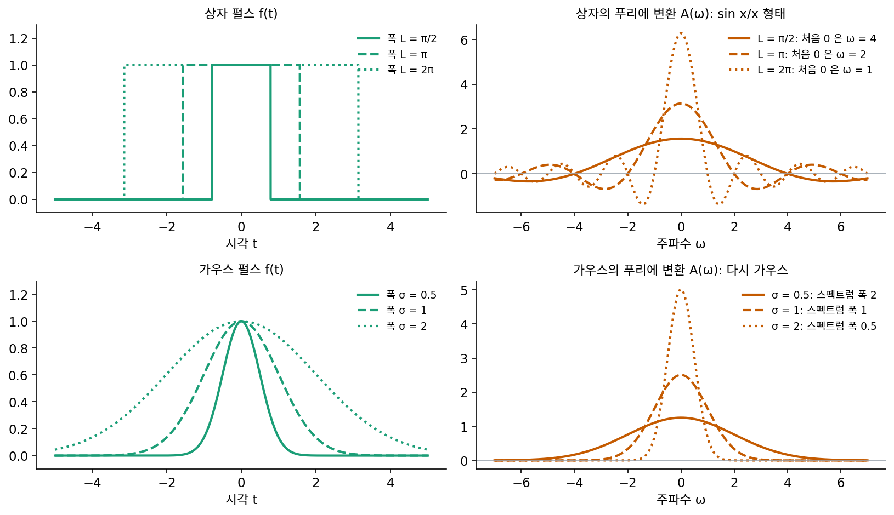
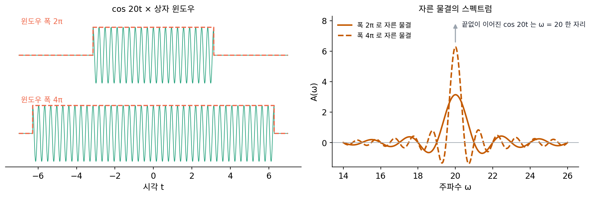
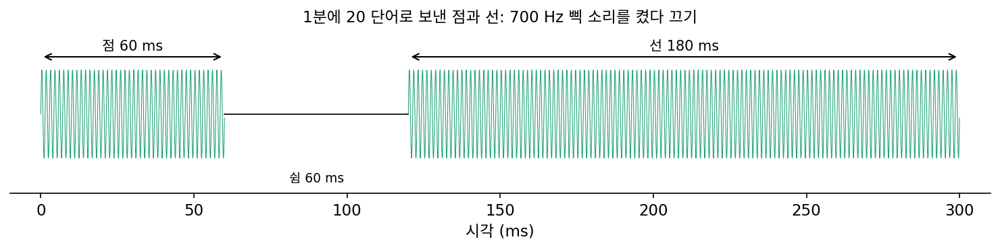
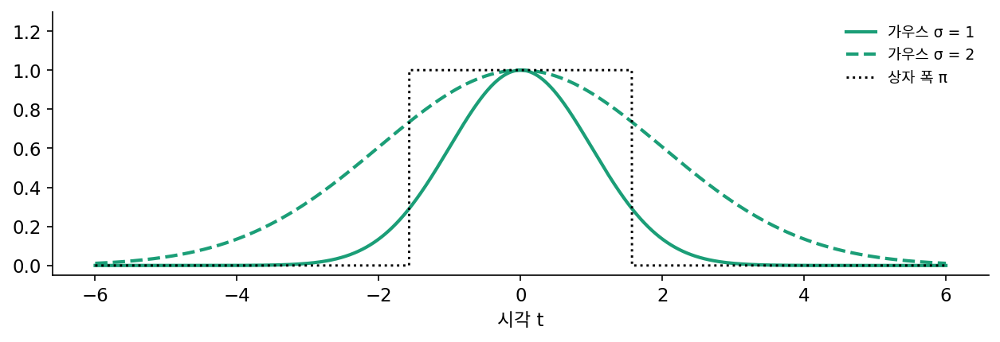
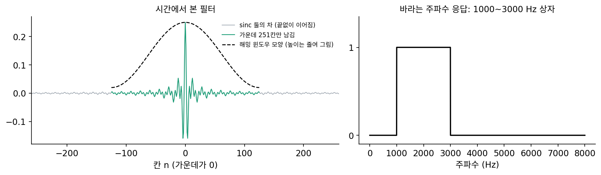

푸리에 변환: 주기를 끝없이 늘리면
지금까지의 신호는 모두 한 주기마다 같은 모양을 되풀이했다. 그런데 손뼉 한 번, 문이 닫히는 소리 한 번, 번개 한 번처럼 한 번 울리고 끝나는 소리도 많다. 푸리에 급수는 계수를 어떻게 고르든 합이 주기마다 같은 모양을 되풀이하므로, 소리가 끝난 뒤 끝없이 조용한 신호를 그대로 적지는 못한다. 손뼉 한 번을 10초나 100초처럼 아주 긴 주기마다 한 번씩 되풀이되는 손뼉으로 보면 어떨까? 주기를 끝없이 늘릴 때 계수들은 어떻게 바뀔까?
역사: 끝없는 막대에서 급수가 막힌 곳
푸리에가 열이 퍼지는 문제를 풀 때, 길이가 정해진 막대나 고리에서는 온도를 막대의 길이(고리의 둘레)를 한 주기로 하는 사인·코사인 물결로 적을 수 있었다. 그런데 끝없이 긴 막대의 한 토막만 데워 두었다면 어떨까? 급수의 합은 주기마다 같은 모양을 되풀이하므로, 계수를 어떻게 골라도 「데운 토막 한 곳만 뜨겁고 나머지는 어디나 0」을 적을 수 없고 데운 토막이 주기마다 하나씩 생겨 버린다. 푸리에는 1811년 학사원 공모에 낸 논문에 끝없이 넓은 물체 속 열의 확산을 새로 더하면서, 이런 자리에서 급수 대신 적분을 썼다. 정해진 구간의 전개를 끝없이 늘여 얻은 적분이었는데, 원점을 두고 좌우가 대칭인 경우는 코사인으로, 좌우가 부호만 바뀌는 경우는 사인으로 따로따로 유도했다. 주어진 함수를 대칭인 부분과 부호만 바뀌는 부분으로 나눠 두 경우를 합치는 방법이 얼마나 두루 통하는지는 나중에야 서서히 알아보았다. 1817년과 1818년 무렵에는 1815년에 이미 같은 적분 기법을 쓰고 있던 푸아송(Siméon Denis Poisson), 코시와 셋이 경쟁하듯 이 방법을 다듬었다. 1822년에 펴낸 『열의 해석적 이론』의 아홉째 장 「열의 확산」은 「끝없는 직선에서 열이 자유롭게 움직이는 일」을 첫 절로 연다.


끝없이 긴 막대라도 지금이면 아주 긴 배열 하나에 온도를 넣고 시간을 조금씩 넘기며 돌려 보면 되지 않아요?
배열은 아무리 길어도 끝이 있어요. 끝에서 열이 어떻게 되는지를 정해야 하는데, 한 가지 방법은 양 끝을 이어 붙이는 거예요. 그러면 막대가 무엇이 되죠?

고리요. 고리 위의 온도는 한 바퀴가 한 주기인 주기 함수니까… 결국 아주 긴 주기의 급수로 푸는 거네요. 데운 토막도 한 바퀴에 하나씩 있는 거고요.

푸리에에게는 끝이 없는 막대에서 그대로 성립하고 종이에 손으로 쓸 수 있는 식이 필요했어요. 주기가 길수록 데운 토막끼리는 멀어지는데, 주기를 끝없이 늘리면 급수는 무엇으로 바뀔까요?

물결 사이 간격이 0으로 가니까 합이 넓이, 적분이 될 것 같아요. 그런데 그러면 계수 하나하나는 어떻게 돼요? 주기가 길수록 펄스가 한 주기에서 차지하는 비율이 줄어드는데요.
폭 π 인 펄스를 주기 2π, 4π, 8π 로 되풀이하면
한 번만 켜졌다 꺼지는 가장 단순한 신호, −π/2 < t < π/2 에서 1 이고 나머지에서 0 인 상자 펄스로 해 보자. 이 펄스를 고른 것은 주기 2π 로 되풀이하면 높이 0 과 1 을 오가는 사각파가 되어 계수를 이미 알기 때문이다(±1 사각파를 1/4 주기 옮긴 코사인 계수 1.2732, −0.4244, 0.2546 의 절반). 같은 펄스를 주기 4π, 8π 로 되풀이하면 펄스 사이의 0 이 길어진다. 주기가 T 이면 한 주기 안에 k 번 되풀이되는 물결 cos(2πkt/T) 를 쓰고, 계수는 2π 대신 T 를 한 주기로 놓은 같은 식으로 구한다. 물결 cos ωt 가 t 가 2π 만큼 가는 동안 ω 번 되풀이된다고 하면(ω = k 이면 지금까지의 cos kt), 주기 T 의 물결들은 ω = 2π/T, 4π/T, … 에 하나씩 놓인다. 주기를 넷으로 바꿔 가며 계수 막대를 구하면 아래와 같다.
| 주기 T | 막대 간격 2π/T | 평균 a₀/2 | 0 < ω < 2 의 막대 수 | ω = 1 의 막대 높이 | 막대 높이 × T/2 |
|---|---|---|---|---|---|
| 2π | 1 | 0.5 | 1 | 0.6366 | 2.0000 |
| 4π | 0.5 | 0.25 | 3 | 0.3183 | 2.0000 |
| 8π | 0.25 | 0.125 | 7 | 0.1592 | 2.0000 |
| 16π | 0.125 | 0.0625 | 15 | 0.0796 | 2.0000 |
주기를 두 배로 늘릴 때마다 막대 간격은 반이 되어 막대가 두 배로 촘촘해지고, 같은 ω 의 막대 높이는 반으로 준다. 그런데 높이에 T/2 를 곱하면 같은 ω 에서는 늘 같은 값이 나오는데, 이유는 계수 식에 있다.
펄스 밖은 0 이므로 한 주기 위의 적분은 주기를 아무리 늘려도 펄스가 있는 −π/2 < t < π/2 에서만 값이 보태지고, 주기에 따라 바뀌는 것은 앞에 붙은 2/T 와 막대가 놓이는 자리 ωₖ 뿐이다. 그래서 막대 높이 × T/2 는 모두 곡선 A(ω) 위에 놓이고, 주기를 끝없이 늘리면 막대가 그 곡선을 빈틈없이 채운다.

되살리는 식도 함께 바뀐다. 막대 간격을 Δω = 2π/T 라 하면(Δ 는 「델타」라고 읽고 차이를 뜻한다) aₖ = (2/T)A(ωₖ) = A(ωₖ)Δω/π 이므로, 급수의 합은 막대마다 A(ωₖ) cos ωₖt 에 막대 간격 Δω 를 곱해 더한 것이 되고, Δω 가 0 으로 가면, 칸을 끝없이 늘릴 때 곱의 합이 곱의 넓이가 되던 것처럼 이 합도 넓이(적분)가 된다. 좌우가 대칭이 아닌 신호까지 적으면 아래와 같다.
신호를 이렇게 이어진 주파수의 성분 A(ω), B(ω) 로 다시 적는 것을 푸리에 변환 (되풀이되지 않는 신호를 이어진 주파수의 물결로 적기 / Fourier transform)이라 하고, 주파수마다의 성분을 늘어놓은 곡선을 그 신호의 스펙트럼이라 부른다. 좌우가 대칭인 신호는 B(ω) = 0 이라 A(ω) 하나로 충분한데, 원점을 두고 부호만 바뀌던 사각파에서 코사인 계수가 모두 0 이던 것과 거꾸로다. 폭 π 상자의 A(ω) 를 ω = 2000 까지만 넣어 되살려 보면 t = 0 에서 0.9998, 모서리 t = π/2 에서 0.4999, t = 2 에서 −0.0002 로 원래 펄스에 다가간다.
상자와 sinc, 가우스와 가우스
상자 펄스의 폭을 L 로 바꾸면 A(ω) = 2 sin(Lω/2)/ω 이다. ω = 0 에서 펄스의 넓이 L 로 가장 높고, ω = 2π/L 에서 처음 0 이 된 뒤 부호를 바꾸며 출렁이면서 줄어든다. sin x / x 형태의 이 곡선을 sinc(싱크) 함수라 부른다. 폭이 L = π/2, π, 2π 이면 처음 0 이 ω = 4, 2, 1 이어서, 펄스의 폭과 처음 0 까지의 거리를 곱하면 늘 2π 다. 종 모양의 가우스 펄스 e^(−t²/(2σ²)) 은 변환해도 다시 종 모양이다. σ(시그마)는 펄스의 폭(표준편차)인데, 스펙트럼의 폭은 1/σ 라서 σ = 0.5, 1, 2 이면 2, 1, 0.5 이고 두 폭의 곱은 늘 1 이다.
이렇게 신호와 그 푸리에 변환을 한 쌍으로 묶은 것을 변환 쌍이라 부른다. 상자와 sinc, 가우스와 가우스 두 쌍 모두 시간에서 늘이면 주파수에서 좁아진다.

물결에 윈도우를 곱하면
끝없이 이어지는 물결 cos 20t 의 스펙트럼은 ω = 20 한 자리에만 있다. 이 물결을 폭 L 동안만 남기고 나머지를 0 으로 잘라 보자. 소리를 한 토막만 잘라 볼 때 곱하는 이런 상자를 윈도우라 부른다. 곱을 합으로 바꾸는 공식 cos 20t · cos ωt = ½(cos(ω − 20)t + cos(ω + 20)t) 를 쓰면, 윈도우를 곱한 물결의 A(ω) 는 윈도우 자신의 푸리에 변환을 20 만큼 옮겨 놓은 것이 된다.
ω = 20 한 자리에 있던 봉우리가 윈도우의 스펙트럼 W 의 모양으로 번지는 것이다. 폭 2π 윈도우면 높이 π, 처음 0 이 ω = 19 와 21 인 sinc 가 되고, 윈도우를 4π 로 늘이면 높이 2π, 처음 0 이 19.5 와 20.5 로 좁아진다. 물결이 여럿 섞여 있으면 봉우리마다 W 의 모양이 하나씩 놓인다(cos 20t + cos 24t 를 폭 2π 로 자르면 ω = 20 과 24 에 높이 π 인 sinc 가 하나씩 선다). 한 스펙트럼의 모양을 다른 스펙트럼의 주파수마다 옮겨 놓되 그 주파수의 값만큼 키워서 모두 더하는 연산이 합성곱이니, 시간에서 두 신호를 곱하면 주파수에서는 두 스펙트럼의 합성곱이 된다. 거꾸로 시간에서 합성곱하면 주파수에서 곱이 되는데, 필터를 물결마다 수 하나를 곱하는 일로 바꾸는 합성곱 정리가 이것이다.

밀어 곱한 평균과 파워 스펙트럼
주기 신호를 τ(타우)만큼 밀어 자기 자신과 곱하고 한 주기 평균을 내면, 직교하는 물결끼리의 곱은 평균이 0 이라 같은 주파수끼리의 곱만 남는다. 2 cos t + sin 3t 이면 평균이 2 cos τ + 0.5 cos 3τ 로, cos kτ 앞의 수가 주파수 k 의 세기 (aₖ² + bₖ²)/2 다(주파수 1 은 (4 + 0)/2 = 2, 주파수 3 은 (0 + 1)/2 = 0.5). 밀어 곱한 평균을 τ 마다 적은 것을 자기상관이라 하는데, 자기상관을 물결로 적으면 계수가 주파수마다의 세기, 파워 스펙트럼이 된다. 한 번만 울리는 신호나 끝없이 이어지는 노이즈에서는 이 합이 적분이 되어 자기상관과 파워 스펙트럼이 서로의 푸리에 변환이 되는데, 이것을 위너–힌친 정리라 한다. 위너(Norbert Wiener)가 1930년 『악타 마테마티카』에 실은 「일반화된 조화 분석」에서 정해진 함수 하나에 대해 증명했고, 힌친(Aleksandr Khinchin)이 1934년 통계가 시각을 옮겨도 같은 무작위 신호(정상 확률 과정)에 대해 같은 결과를 냈다. 노이즈처럼 끝없이 이어지는 신호는 넓이가 끝없이 커서 푸리에 변환의 적분이 정해지지 않지만, 밀어 곱한 평균은 정해진다는 데 이 정리의 쓸모가 있다.
ML에서: 주파수 상자의 두 끝만 배우는 SincNet
말소리를 칸 그대로 받는 신경망의 첫 합성곱 층은 보통 필터마다 칸 수만큼 무게를 배운다. 라바넬리(Mirco Ravanelli)와 벤지오(Yoshua Bengio)가 2018년 IEEE 음성 언어 기술 워크숍(SLT)에 낸 SincNet 은 필터를 주파수에서 상자로 정해 두고, 상자의 두 끝인 아래쪽과 위쪽 차단 주파수만 배운다. 주파수의 상자를 시간으로 되돌리면 sinc 이므로, 띠 하나만 통과시키는 필터는 시간에서 sinc 둘의 차가 된다. 논문은 첫 층에 이런 필터 80개를 각각 251칸 길이로 두어, 필터마다 251개였을 무게를 숫자 둘로 줄였다. 그런데 sinc 는 꼬리가 끝없이 길어 251칸에서 잘라야 했고, 논문은 자른 필터에 해밍 윈도우(가운데가 크고 양 끝이 작은 종 모양)를 곱했다. 자르기만 하면 무엇이 생기는지는 아래 문제 15에서 본다.
문제 13. 모스 부호의 점과 선
무전으로 모스 부호를 보낼 때 700 Hz 삑 소리를 켰다 껐다 한다고 하자. 점 하나의 길이는 1200 ms 를 1분에 보내는 단어 수로 나눈 값이고 선은 점의 세 배라서, 1분에 20 단어로 보내면 점은 60 ms, 선은 180 ms 동안 소리가 난다. 삑 소리 하나를 점이나 선의 길이만큼 열린 상자 윈도우로 자른 물결로 보자. (가) 점과 선의 스펙트럼에서 700 Hz 봉우리 양옆으로 처음 0 이 되는 곳은 각각 몇 Hz 떨어져 있는가? (나) 1분에 40 단어로 빨리 보내면 점의 봉우리는 어떻게 되는가? (다) 봉우리 높이는 점과 선 가운데 어느 쪽이 몇 배 높은가?

점이 더 짧으니까 소리가 금방 끝나잖아요. 스펙트럼도 점 쪽이 700 Hz 둘레에 더 좁게 모여 있겠죠.
상자 윈도우로 자른 물결에서, 봉우리 옆 처음 0 의 자리는 윈도우 폭 L 과 어떤 관계였죠?
봉우리에서 2π/L 떨어진 곳이었어요. 그건 ω 로 본 거고, t 를 초 단위로 놓으면 ω 를 2π 로 나눈 것이 1초에 몇 번, Hz 니까… Hz 로는 1/L 떨어진 곳이에요.

그럼 점은 1/0.06초라서 16.7 Hz, 선은 1/0.18초라서 5.6 Hz 떨어져요. 스크립트로 스펙트럼을 그려 봐도 16.66 Hz 와 5.55 Hz 에서 처음 0 이에요. 거꾸로네요. 짧은 점이 세 배 넓게 퍼져요.
(나)는 40 단어면 점이 30 ms 니까 33.3 Hz 로 두 배 넓어져.
(다)의 봉우리 높이는 윈도우 폭과 어떤 관계였죠?
음, 높이는 폭의 절반 L/2 였으니까 선이 점보다 세 배 높아요.
높이는 세 배, 퍼지는 폭은 3분의 1이네.
길게 울릴수록 700 Hz 한 자리에 높게 몰리고 짧게 끊을수록 둘레로 낮게 퍼지니까, 빨리 보내는 모스 부호일수록 수신기가 700 Hz 둘레를 넓게 들어야겠어요.
문제 14. 가우스 펄스를 두 배로 늘이면
높이 1, 폭 σ 인 가우스 펄스 e^(−t²/(2σ²)) 의 푸리에 변환은 A(ω) = σ√(2π) e^(−σ²ω²/2) 다. (가) σ = 1 과 σ = 2 에서 A(0) 은 얼마이고, A 가 A(0) 의 절반으로 떨어지는 ω 는 어디인가? (나) 두 경우 스펙트럼 아래 넓이 ∫₀^∞ A(ω) dω 를 구하라. 같은가, 다른가? 왜 그런가? (다) 폭 π 인 상자 펄스의 |A(ω)| 와 σ = 1 인 가우스 펄스의 A(ω) 를 ω = 5, 9, 13 에서 비교하라. 차이는 어디서 오는가?

(가)는 A(0) = σ√(2π) 니까 σ = 1 이면 2.5066, σ = 2 면 5.0133 이야. 절반이 되려면 e^(−σ²ω²/2) = 1/2 이어야 하니까, 로그를 씌우면 σ²ω²/2 = ln 2 이고 ω = √(2 ln 2)/σ. σ = 1 이면 1.1774, σ = 2 면 0.5887 이야.
높이는 두 배, 폭은 반이네. 그럼 (나)는 높이 × 폭이라 넓이가 같겠다. 수치 적분으로 해 보니 둘 다 3.1416, π 야.
왜 하필 π 일까요? 되살리는 식에 t = 0 을 넣어 보면요?
f(0) = (1/π)∫₀^∞ A(ω) cos 0 dω 니까 ∫₀^∞ A dω = πf(0) 이에요. 펄스를 늘여도 가운데 높이 f(0) 는 1 이라서 넓이가 바뀌지 않는 거네요.
(다)는 숫자를 놓고 볼까요?
일단 수치를 넣어 볼게요. 상자는 ω = 5, 9, 13 에서 0.4000, 0.2222, 0.1538 로 2/ω 를 따라 줄어요. 가우스는 9.3 × 10⁻⁶, 6.5 × 10⁻¹⁸, 5.0 × 10⁻³⁷ 이고요. 비교가 안 될 만큼 차이가 나요.

상자에는 있고 가우스에는 없는 게 뭐죠?
값이 뚝 끊기는 모서리요. 끊긴 곳이 있는 사각파의 계수가 1/k 로 천천히 줄었던 것처럼 상자의 스펙트럼도 1/ω 로 천천히 줄고, 가우스는 어디서나 매끄러우니까 매끄러운 함수의 계수처럼 거듭제곱보다 빨리 주는 거네요.
문제 15. SincNet 필터를 251칸으로 자르면
1초에 16,000칸으로 적은 소리에서 1000~3000 Hz 만 통과시키는 필터를 만든다. 주파수에서 이 상자는 시간에서 sinc 둘의 차인데(SincNet 의 식), sinc 의 꼬리는 끝없이 길다. (가) 가운데 251칸만 남기고 자르면(251칸짜리 상자 윈도우를 곱하면) 주파수 응답은 1000~3000 Hz 안에서 가장 크게 얼마까지 올라가는가? (나) 501칸, 1001칸으로 늘려 자르면? (다) 251칸에 해밍 윈도우(가운데 1, 양 끝 0.08 인 종 모양)를 곱하면 넘침과 띠의 모서리는 어떻게 되는가?

(가)는 251칸 필터의 주파수 응답을 스크립트로 구해 볼게요. 띠 안에서 가장 큰 값이 1.0908 이고 2937 Hz 근처예요. 띠 위쪽 끝 바로 안쪽이 9% 쯤 솟았어요.
251칸으로 자른 것은 시간에서 무엇을 곱한 거였죠?
음, 251칸짜리 상자 윈도우요. 그러면 주파수에서는 1000~3000 Hz 상자에 그 윈도우의 sinc 가 합성곱으로 번지고요. 문제 13(모스 부호)에서 700 Hz 한 자리가 sinc 로 번졌던 것과 같은 계산이에요.
그럼 (나)는 칸을 늘릴수록 이상적인 상자에 가까워지니까 넘침도 줄겠지.
돌려 보고 말해 볼래요?
501칸은 1.0901, 1001칸은 1.0898 이에요. 9% 에서 안 내려가요. 솟은 자리만 띠의 끝으로 다가가고요.
뛴 높이의 9% 쯤에서 멈추고 폭만 좁아지는 넘침을 어디서 봤죠?
깁스 현상이요. 사각파 항을 늘려도 봉우리가 1.179 에 남고 폭만 좁아졌잖아요. 이번엔 주파수에서 상자의 모서리가 끊긴 곳이고, 칸 수를 늘리는 건 사각파에서 항을 늘리던 것에 해당하고요.
(다)는요? 넘침만 보지 말고 띠의 모서리도 함께 보세요.
해밍 윈도우를 곱하면 띠 안 가장 큰 값이 1.0022 라 넘침이 0.22% 로 줄어요. 띠 끝에서 300 Hz 넘게 떨어진 곳의 가장 큰 값도 0.0224 에서 0.0015 로 작아지고요.
그런데 3000 Hz 모서리에서 0.9 에서 0.1 로 떨어지는 폭이 56 Hz 에서 117 Hz 로 넓어졌어.

윈도우 양 끝이 0.08 로 부드럽게 내려가니까 자른 자리가 덜 끊겨 넘침은 줄고, 대신 모서리가 무뎌지는 거구나. SincNet 이 자른 필터에 해밍 윈도우를 곱한 이유가 이거였어.